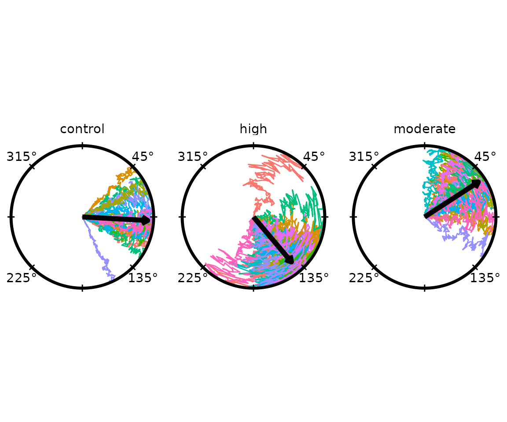
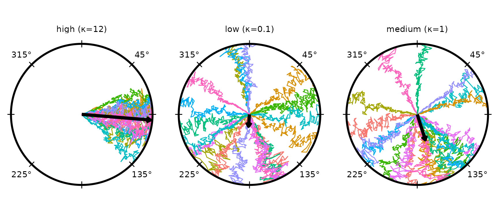
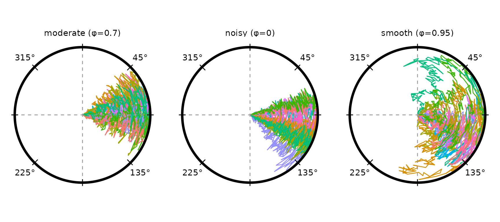
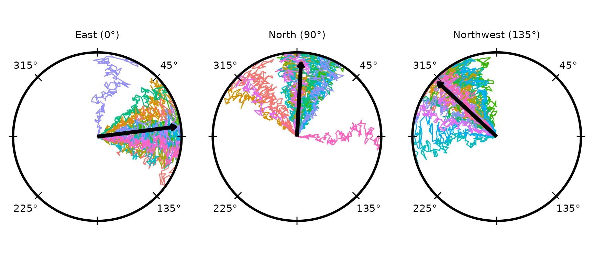
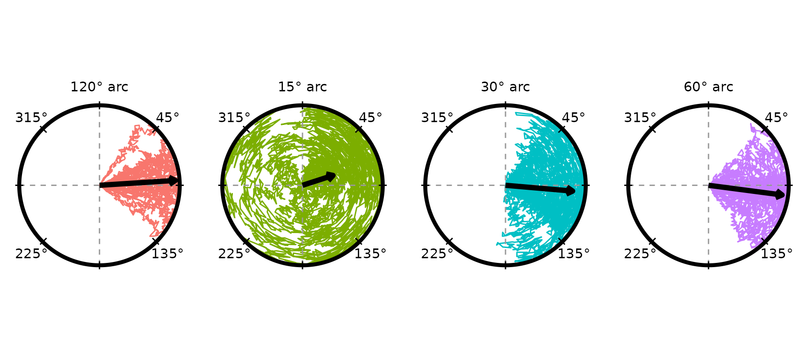
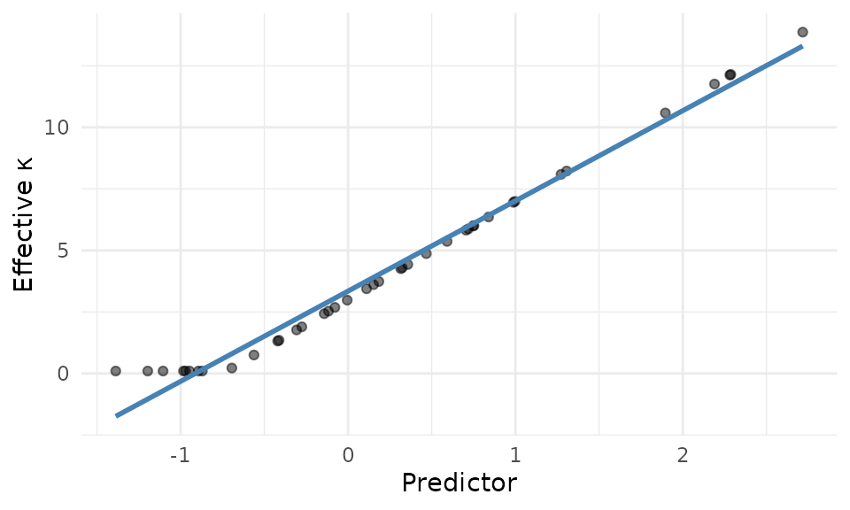
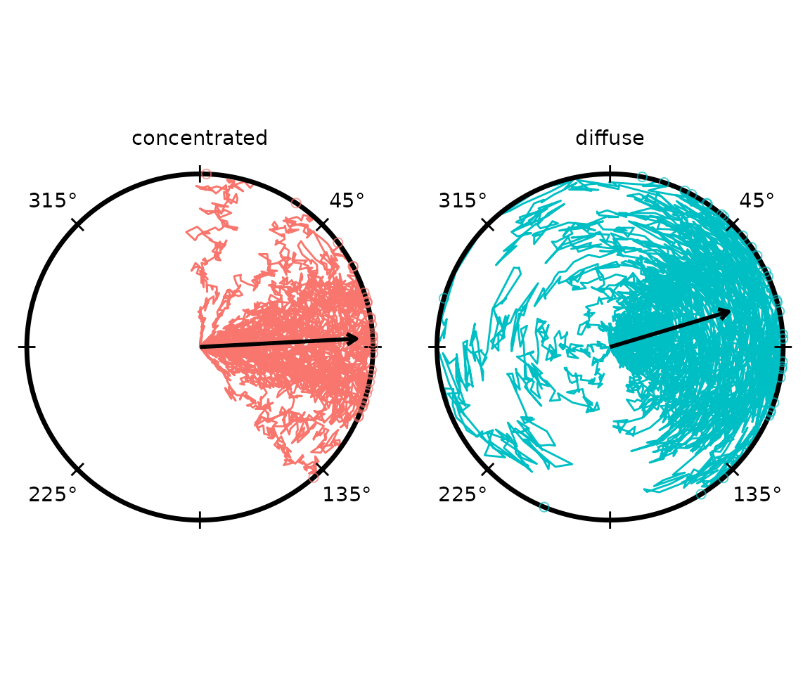

if (requireNamespace("pkgload", quietly = TRUE)) {
pkgload::load_all("..", export_all = FALSE, helpers = FALSE, quiet = TRUE)
} else if (requireNamespace("radiatR", quietly = TRUE)) {
library(radiatR)
} else {
stop("Package 'radiatR' not installed and 'pkgload' not available.")
}
library(ggplot2)Overview
simulate_tracks() generates synthetic circular-arena
trajectories without any tracking files. Its main uses are:
- Verifying that a new analysis pipeline works before real data arrives.
- Reproducing plots and examples in documentation.
- Teaching: demonstrating how concentration, tortuosity, and directional bias each affect the appearance of paths.
- Informal power analysis: generate data under a plausible effect size and check whether the expected statistical pattern is visible.
Quick Start
Called with no arguments, simulate_tracks() returns a
tibble of three conditions (60 trials total, 200 frames each):
sim <- simulate_tracks(seed = 1)
dim(sim)
#> [1] 12000 16
names(sim)
#> [1] "condition" "trial_id" "trial_num" "frame"
#> [5] "predictor" "concentration" "tortuosity" "ref_heading"
#> [9] "final_heading" "rho" "abs_theta" "rel_theta"
#> [13] "abs_x" "abs_y" "rel_x" "rel_y"Each row is one frame. The key columns are:
| Column | Description |
|---|---|
condition |
Condition label |
trial_id |
Unique trial identifier
(<condition>_<index>) |
frame |
Frame number within the trial |
predictor |
Per-trial continuous covariate value |
concentration |
Effective von Mises κ for the trial |
tortuosity |
Effective angular noise σ for the trial |
final_heading |
Drawn heading (unit-circle radians) |
abs_x, abs_y
|
Absolute position on the unit disc |
rel_x, rel_y
|
Position re-centred on the heading direction |
abs_theta, rel_theta
|
Corresponding angular coordinates |
Output Formats
The output argument controls what is returned.
# Default: long-form tibble
sim_tbl <- simulate_tracks(seed = 1, output = "tibble")
# TrajSet directly (ready for radiate(), derive_headings(), etc.)
sim_ts <- simulate_tracks(seed = 1, output = "trajset")
# Both representations in a named list
sim_both <- simulate_tracks(seed = 1, output = "both")
names(sim_both) # "tibble" "trajset"The output = "trajset" path wraps the tibble in a
TrajSet (absolute coordinates, no normalisation). Use it
whenever you want to plug straight into the plotting or analysis
functions.
Plotting the Default Simulation
ts_default <- simulate_tracks(seed = 1, output = "trajset")
radiate(ts_default,
group_col = "trial_id",
colour_cycle = 10,
panel_by = "condition",
ncol = 3,
show_labels = FALSE,
show_arrow = TRUE)
The three default conditions differ in directional bias, concentration, and tortuosity (see below).
The Conditions Table
All simulation behaviour is controlled by a data frame passed to
conditions. When conditions = NULL the
function fills in a three-condition template. Supply your own data frame
to override any subset of columns; missing columns receive sensible
defaults.
| Column | Default | Description |
|---|---|---|
condition |
"condition_N" |
Label for the condition |
n_trials |
10 |
Number of trajectories |
ref_mean |
0 |
Baseline reference direction (unit-circle radians) |
concentration_base |
5 |
Baseline von Mises κ |
concentration_slope |
0 |
Slope of κ on the per-trial predictor |
tortuosity_base |
0.06 |
Baseline angular noise σ |
tortuosity_slope |
0 |
Slope of σ on the predictor |
tortuosity_sd |
0.01 |
Trial-to-trial variability in σ |
predictor_mean |
0 |
Mean of the per-trial predictor distribution |
predictor_sd |
0.2 |
SD of the predictor distribution |
predictor_values |
(none) | Optional list-column of explicit predictor values |
Concentration (κ)
concentration_base is the von Mises κ passed to
rvonmises(). Higher values produce tightly clustered
headings; values near zero produce near-uniform heading
distributions.
conds_kappa <- data.frame(
condition = c("low (κ=0.1)", "medium (κ=1)", "high (κ=12)"),
n_trials = 20L,
concentration_base = c(0.1, 1, 12),
tortuosity_base = 0.05
)
ts_kappa <- simulate_tracks(conditions = conds_kappa, seed = 42,
output = "trajset")
radiate(ts_kappa,
group_col = "trial_id",
colour_cycle = 10,
panel_by = "condition",
ncol = 3,
show_labels = FALSE,
show_arrow = TRUE)
At κ = 1 the mean arrow is short (low resultant length); at κ = 12 nearly all trials point in the same direction.
Tortuosity and Path Smoothness
Two parameters control within-trial path shape:
-
tortuosity_base— the SD of the per-step angular noise. Larger values produce more sinuous paths. -
phi— autocorrelation of successive angular deviations (0 = white noise, values near 1 produce smooth, sweeping curves). Passed directly tosimulate_tracks(), not via the conditions table.
conds_tort <- data.frame(
condition = c("smooth (φ=0.95)", "moderate (φ=0.7)", "noisy (φ=0)"),
n_trials = 15L,
concentration_base = 6,
tortuosity_base = c(0.12, 0.12, 0.12)
)
phi_vals <- c(0.95, 0.7, 0)
# Simulate each phi separately and bind
parts <- lapply(seq_along(phi_vals), function(i) {
d <- conds_tort[i, , drop = FALSE]
simulate_tracks(conditions = d, n_points = 200,
phi = phi_vals[i], seed = 7 + i)
})
ts_tort <- TrajSet(
do.call(rbind, parts),
id = "trial_id", time = "frame",
x = "abs_x", y = "abs_y", angle = "abs_theta",
angle_unit = "radians", normalize_xy = FALSE
)
radiate(ts_tort,
group_col = "trial_id",
colour_cycle = 10,
panel_by = "condition",
ncol = 3,
show_labels = FALSE,
show_arrow = FALSE)
Directional Bias (ref_mean)
ref_mean shifts the reference direction away from East
(0 rad). Use it to simulate experiments where the reference is not along
the positive x-axis.
conds_bias <- data.frame(
condition = c("East (0°)", "North (90°)", "Northwest (135°)"),
n_trials = 20L,
concentration_base = 5,
tortuosity_base = 0.06,
ref_mean = c(0, pi / 2, 3 * pi / 4)
)
ts_bias <- simulate_tracks(conditions = conds_bias, seed = 99,
output = "trajset")
radiate(ts_bias,
group_col = "trial_id",
colour_cycle = 10,
panel_by = "condition",
ncol = 3,
show_labels = FALSE,
show_arrow = TRUE)
Multi-Condition Gradient
A common design is a monotone gradient in cue strength. The example below simulates four levels with increasing concentration and decreasing tortuosity — mimicking an orientation experiment where stronger cues produce tighter, smoother paths.
conds_grad <- data.frame(
condition = paste0(c(15, 30, 60, 120), "° arc"),
n_trials = 25L,
concentration_base = c(1.5, 3, 6, 10),
tortuosity_base = c(0.14, 0.10, 0.06, 0.03),
tortuosity_sd = 0.015
)
ts_grad <- simulate_tracks(conditions = conds_grad, n_points = 200,
seed = 55, output = "trajset")
radiate(ts_grad,
group_col = "trial_id",
colour_col = "condition",
panel_by = "condition",
ncol = 4,
show_labels = FALSE,
show_arrow = TRUE)
Continuous Predictor
When concentration_slope or
tortuosity_slope is non-zero, the final kappa and
tortuosity of each trial depend on its sampled predictor value. This
lets you model experiments where individual differences (e.g. body size,
prior exposure) modulate the response.
conds_pred <- data.frame(
condition = "gradient",
n_trials = 40L,
concentration_base = 3,
concentration_slope = 4, # kappa rises with predictor
tortuosity_base = 0.10,
tortuosity_slope = -0.04, # smoother at high predictor
predictor_mean = 0,
predictor_sd = 1
)
sim_pred <- simulate_tracks(conditions = conds_pred, seed = 7, output = "both")
# Each trial gets its own predictor sample
range(sim_pred$tibble$predictor)
#> [1] -1.387996 2.716752
range(sim_pred$tibble$concentration)
#> [1] 0.10000 13.86701Plotting concentration against the predictor confirms the linear relationship:
trial_summary <- unique(sim_pred$tibble[, c("trial_id", "predictor",
"concentration")])
ggplot(trial_summary, aes(predictor, concentration)) +
geom_point(alpha = 0.5) +
geom_smooth(method = "lm", se = FALSE, colour = "steelblue") +
labs(x = "Predictor", y = "Effective κ") +
theme_minimal()
#> `geom_smooth()` using formula = 'y ~ x'
Connecting to Circular Analysis
Simulated TrajSet objects feed directly into
derive_headings() and circ_summarise(), making
it straightforward to run the same analysis pipeline on synthetic
data.
conds_analysis <- data.frame(
condition = c("diffuse", "concentrated"),
n_trials = 30L,
concentration_base = c(1.5, 8),
tortuosity_base = c(0.12, 0.04)
)
sim_analysis <- simulate_tracks(conditions = conds_analysis, seed = 21,
output = "both")
hd <- derive_headings(sim_analysis$trajset, rule = "crossing",
circ0 = 0.2, circ1 = 0.4,
coords = "absolute",
angle_convention = "unit_circle",
return_coords = TRUE)
names(hd)[names(hd) == "id"] <- "trial_id"
# derive_headings returns only id/heading/coords; join condition back
cond_map <- unique(sim_analysis$tibble[, c("trial_id", "condition")])
hd <- merge(hd, cond_map, by = "trial_id")
compute_circ_mean(hd, colour_col = "condition")[,
c("condition", "mean_dir", "resultant_R")]
#> condition mean_dir resultant_R
#> 1 concentrated 0.05301978 0.9039690
#> 2 diffuse 0.29012285 0.7131608Visualise the headings alongside the trajectories:
p <- radiate(sim_analysis$trajset,
group_col = "trial_id",
colour_col = "condition",
panel_by = "condition",
ncol = 2,
show_labels = FALSE,
show_arrow = FALSE) +
add_heading_points(hd, colour_col = "condition", size = 2, alpha = 0.7) +
add_heading_arrow(hd, colour_col = "condition", colour = "black")
p
Reproducibility and Saving
Pass seed for exact reproducibility. Pass
write_path to write the tibble to a CSV alongside (or
instead of) returning it — useful when you want to hand the data to a
colleague or another tool.
simulate_tracks(
conditions = conds_grad,
n_points = 200,
seed = 55,
write_path = "sim_gradient.csv"
)